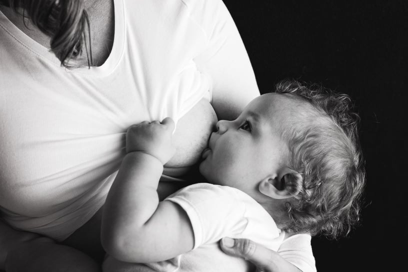
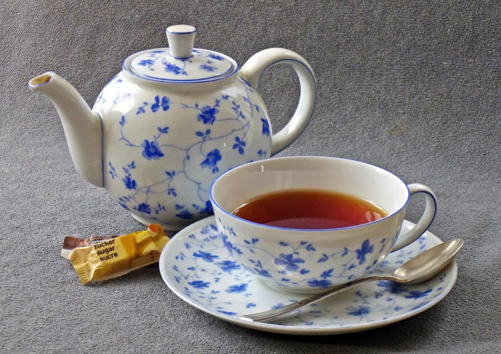

No Code Website Builderich bin Katharina
zertifizierte ganzheitliche Baby- und Kinderschlafberaterin
ehrenamtliche Stillberaterin bei der La Leche Liga

wenn das Stillen nicht rund läuft
wenn ihr euch ruhigere Nächte mit eurem Kind wünscht

zum herzlichen Austausch mit anderen Müttern und deren Kindern
Wie häufig habe ich den Satz gehört "Oh, du bekommst Zwillinge - das wird nichts mit Vollstillen." Und dann habe ich Katha getroffen. Während der Schwangerschaft noch hat sie mich beeindruckt mit ihrer Expertise und ihrer Leidenschaft fürs Stillen. Und hierbei meine ich Leidenschaft nicht im dogmatischen sondern im wissenschaftlichen und herzlichen Sinne. Nach vielen Gesprächen, Hausbesuchen, Literaturtipps, Nachrichten, Telefonaten und einem immer wieder gemeinsamen Anpassen an die aktuelle Situation und Kapazitäten, kann ich jetzt mit Stolz sagen, ich stille meine beiden Kinder voll. Auch Dank meines Partners, der unermüdlich mitgetragen hat, im wörtlichen Sinne.
Danke Katha für dein Wissen, deine Begleitung, deine Schulter und dein Mutmachen.
Eine absolute Herzensempfehlung. Die ehrenamtliche Arbeit von Katharina schafft bei ihren regelmäßigen Mittwochstreffen eine warme Atmosphäre, in der man offen über Stillen, Beikost und das Mama-Leben sprechen kann und alles bleibt vertraulich. Obwohl ich persönlich nie Beschwerden beim Stillen hatte und diese besondere Zeit mit meiner inzwischen 15 Monate alten Tochter immer noch sehr genieße, habe ich ihre Tipps immer sehr geschätzt, denn bei den Treffen habe ich erlebt, wie wertvoll ihre Unterstützung auch für Mamas ist, bei denen das Stillen nicht immer selbstverständlich verläuft. Mir persönlich hat auch ein telefonischer Termin mit Informationen zum nächtlichen Abstillen sehr geholfen.
Unser Baby musste an seinem 4. Lebenstag in die Kinderklinik, da die Gelbsucht, die es hatte, sich verschlechtert hatte. Ab da war (aus verschiedenen medizinischen Gründen) erstmal das Füttern mit der Flasche angesagt. Der Weg zurück zum Stillen war für uns nicht so einfach. Zum Glück haben wir an diesem Punkt eine Stillberatung mit Katharina gemacht. In der Beratung haben wir viel gelernt über das Stillen generell sowie über die verschiedenen Wege von der Flasche hin zu wieder mehr "Brustfütterung". Aber das wichtigste war dabei das individuelle Schauen auf unsere Situation und dass ich wieder mehr Vertrauen in mich und das Baby gefasst habe, dass wir den Weg zurück zum Stillen schaffen.
Mittlerweile stille ich voll und dem Baby, meinem Partner und mir geht es gut und es ist wieder mehr Ruhe in unseren Alltag eingekehrt.
No Code Website Builder